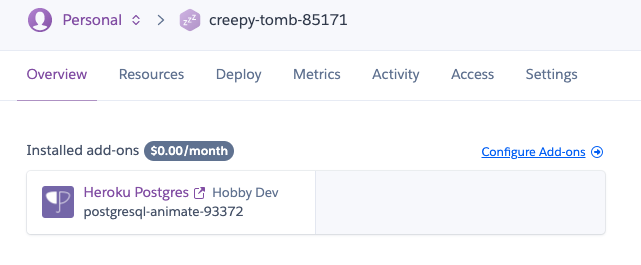
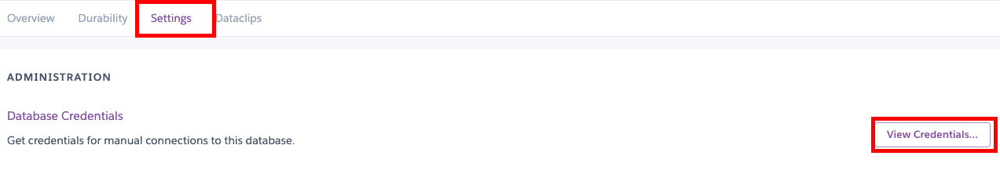
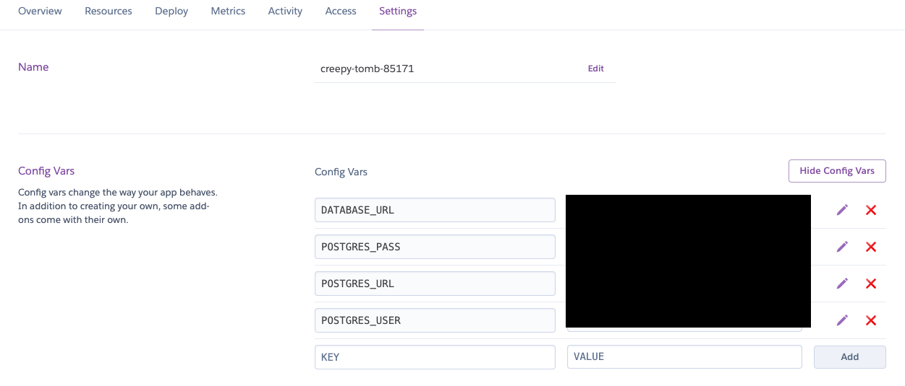
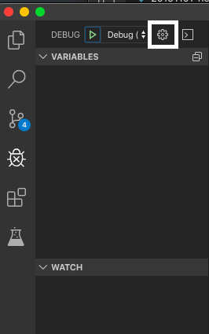

Spring bootで作成したアプリケーションをHerokuにアップロードする際に、
データベースを使用したいですよね。
Herokuで無料で使えるPostgreSQLをSpring bootアプリケーションから使えるようにしてみます。
前提
- LocalにPostgreSQLがダウンロード済み
Spring Bootプロジェクトの作成
Spring Initializrにて、以下のDependencyを含むプロジェクトを作成します。
- Spring Web
- Spring Boot DevTools
- Thymeleaf
- PSQL Driver
- Spring Data JPA
そのままデバッグするとDB接続が設定されていないために警告が出ます。
application.propertiesで接続情報を設定しましょう。
1 | # 接続情報 |
DB接続を確認するため、簡単なプログラムを組んでみます。
Customerエンティティとそのリポジトリを作成します。
1 | //import省略 |
1 | //import省略 |
それではコントローラを作成してみます。CustomerControllerって不穏なクラス名ですね。
1 | //import省略 |
テンプレートはこうなります。
1 |
|
テーブルも用意しておきましょう。
1 |
|
ようやく準備が整いました。
ローカル環境で実行してみてください。
まあ、しょぼいページですが良いでしょう。
Herokuアプリケーションの作成
作成したアプリケーションをHerokuにデプロイします。
まずは以下のコマンドでデプロイします。
1 | # heroku create |
このままだとHerokuアプリケーション上にDBが存在しないためエラーが出ます。
以下のコマンドでDBを作成しましょう。
1 | # heroku addons:create heroku-postgresql:hobby-dev |
DBができたら接続情報を確認します。
注意
公式には以下のようにあります。
が、自分の環境では設定しないと接続できませんでした。
とんでもなくハマりました。
Once the database add-on has been created, Heroku will automatically populate the environment variables SPRING_DATASOURCE_URL, SPRING_DATASOURCE_USERNAME, and SPRING_DATASOURCE_PASSWORD. These environment variables should allow your Spring Boot application to connect to the database without any other configuration as long as you add a PostgreSQL JDBC driver to your dependencies like 以下略
超ざっくり和訳
DBのURL、ユーザ名、PWは自動生成するからPostgreSQLのJDBC入れるだけで設定はOKやで〜。
では、接続情報はどこから取得するかと言うと、
Herokuに作成したアプリケーションのページから取得できます。
アプリケーションページからPostgresのマークをクリックします。

その後、Postgresアドオンのページに飛ぶので、
Setting > Credentialsから以下項目を控えます。
- Host
- Database
- User
- Password

その内容でapplication.propertiesを編集します。
1 | # 接続情報 |
この内容でデプロイしてみてください。
動作したでしょうか。
環境変数を設定する
先ほどのUser名やPWベタ打ちはわかりやすくはありますが、
ローカルとHerokuデプロイの際に毎回ファイルを書き換えないといけなかったり、
セキュリティ面で不安があります。
そこで環境変数を設定しましょう。
まずはapplication.propertiesを以下のように編集します。
${}で囲った部分が環境変数で置き換えられます。
1 | # 接続情報 |
それでは環境変数を設定しましょう。
まずはHerokuです。アプリケーションページの
Settings > Config Varsから
- POSTGRES_URL
- POSTGRES_USER
- POSTGRES_PASS
の三つを設定してください。

画像一番上のDATABASE_URLは自動で生成されるようで
特にいじっていないのですが、用途不明です。
また、ローカルではどのエディタを使用しているかで
違うのですが、私が使っているVSCodeを例に紹介します。
VSCodeにはlaunch.jsonというデバッグ時の設定ファイルがあります。
サイドメニューからデバッグ(虫みたいなやつ)を開いて、歯車をクリックするとlaunch.jsonが開きます。

その中にjava用の設定箇所があるので、以下のenvの内容を追記します。
1 | "configurations": [ |
以上で、環境変数が設定されました。
ローカル、Heroku上どちらでも動作することを確認してみてください。